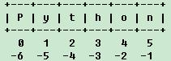

相信即使是Python新手也很容易理解下面的切片行为：
- >>> s = 'this_is_a_test'
- >>> s[1 : 5]
- 'his_'
进一步，下面的语法及输出也很不难理解：
- >>> s = 'this_is_a_test'
- >>> s[ : : 2]
- 'ti_sats'
那么，下面的呢？
- >>> s = 'this_is_a_test'
- >>> s[ : : -1]
- 'tset_a_si_siht' ## 为何s被反转了？
- >>> s[1 : 6 : -1]
- '' ## 为何只得到个空串？
- >>> s[6 : 1 : -1]
- 'si_si' ## 为何是这个结果？
是不是觉得当slicing表达式的第3个参数（步长，"stride" or "step"）为负数时，结果有点奇怪？
说实话，新手对上述结果感到困惑是正常的（当然，如果你完全搞明白了“为什么”，那么恭喜你，因为你对Python语法基础掌握的应该比较扎实了）。
本篇笔记就是要剖析slicing表达式的语法，争取为Python初学者解开上例的困惑。
1. 切片表达式（slicing expression）
Python官方文档对切片语法的说明非常简洁：
A slicing selects a range of items in a sequence object (e.g., a string, tuple or list). Slicings may be used as expressions or as targets in assignment or del statements.
根据文档说明，切片语法分为两种：简单切片（simple_slicing）和扩展切片（extended_slicing），下面分别进行介绍。
2. 简单切片（simple_slicing）
简单切片语法如下：
s[begin : end]
其中，s表示任何sequence类型的 对象，begin和end必须是int值或求值后可以得到int值的表达式，它们及其之间的分号共同构成了一个前闭后开区间（即begin <= idx < end），指明切片操作将要访问的源序列s的索引值的begin和end，其中真正的end位置是s中end的前一个位置，也即，切片返回的序列的最后一 个element在源序列s的索引为(end-1)。
备注1：begin和end都可以被缺省，此时，它们的默认值分别是0和sys.maxint
备注2：begin和end的值可以超过序列的实际长度，如s = [1, 2, 3]; s[0 : 8]也是合法的
备注3：begin和end均可以为负值。按照Python解释器内部实现的约定，-1是序列s最后一个元素的索引，-2是倒数第二个元素的索引，以此类推。我们可以借助Python官方教程strings说明文档关于slice的部分来理解正/负索引号的对应关系（注意，下面的示意图对原文档中索引值画的位置有所微调，个人认为这样更易于大多数人的理解）：

由上图可知，Python内部表示sequence类型时，若采用正索引值表示，则有效的索引范围是[0, len(s)-1]；若采用负索引值表示，则有效的索引范围是[-len(s), -1]。
如果能牢牢记住这一点，那关于slice的一些看起来让人疑惑的语法行为就比较容易理解了。
下面的slicing表达式均属于简单切片语法：
- >>> s = ['a', 'b', 'c', 'd', 'e', 'f']
- >>> s[0 : len(s)] ## output: ['a', 'b', 'c', 'd', 'e', 'f']
- >>> s[0 : -1] ## output: ['a', 'b', 'c', 'd', 'e']
- >>> s[ : -1] ## output: ['a', 'b', 'c', 'd', 'e']
- >>> s[2 : -1] ## output: ['c', 'd', 'e']
- >>> s[-3 : -1] ## output: ['d', 'e']
- >>> s[-3 : ] ## output: ['d', 'e', 'f']
- >>> s[3 : 1] ## output: []
3. 扩展切片（extended_slicing）
扩展切片语法如下：
s[begin : end : stride]
与简单切片语法相比，扩展切片只是增加了第3个参数，即步长参数（英文资料中通常称为"stride"或"step"）。
扩展切片语法引入的"stride"参数是个需要特别注意的参数，因为它的正/负取值将会影响切片操作对源序列s的访问方向，而这正是本文开始那几个示例可能引起python新手困惑的原因。
其实规则很简单，说穿不值一文钱：
1) 当stride参数为正值（positive）时，表明切片操作从左至右（即正向）访问源序列s的元素， 此时，若begin和end参数有缺省，则Python解释器默认将其设置为None。如s[0 : : 1]会被解释器当作s[0 : None : 1]，此时，end实际取值要大于其有效索引范围的上限值，以保证切片操作能访问到源序列s从begin开始的所有元素（从左向右）。
2) 当stride参数为负值（negative）时，表明切片操作从右至左（即逆向）访问源序列s的元素， 此时，若begin和end参数有缺省，则Python解释器默认将其设置为None。如s[-1 : : -1]会被解释器当作s[-1 : None : -1]，此时，end实际取值要小于其有效索引范围的下限值，已保证切片操作能访问到源序列s从begin开始的所有元素（逆向，从右向左）。
3) 无论stride参数取正值还是负值，切片表达式的begin和end索引值需要保证在切片操作的访问方向上，从begin到end之间有元素，这样切片操作才能保证返回非空集。
通过本文第2节给出的Python内部对序列对象索引值约定示意图，应该可以很容易地理解这3条规则。
介绍到这里，本文开始处的那个示例输出结果的原因想必也很清楚了吧。
- >>> s = 'this_is_a_test'
- >>> s[ : : -1]
- 'tset_a_si_siht' ## Q: 为何s被反转了？ A: 步长参数-1表明逆向访问s
- >>> s[1 : 6 : -1]
- '' ## Q: 为何只得到个空串？ A: 步长参数为负时，逆向访问，但begin与end间无元素，故返空串
- >>> s[6 : 1 : -1]
- 'si_si' ## Q: 为何是这个结果？ A: 逆向访问，切片访问到的元素正值索引范围为[2:6]，故返'si_si'
备注：根 据《Python核心编程》一书第6.1.2节的介绍，这里称为“扩展”是因为早期的Python解释器只支持不带步长参数的简单切片，带步长的切片操作 是以Python扩展的方式实现的。事实上，目前的CPython解释器早就支持纯Python的带步长参数的切片操作，但作为历史名称，“扩展”一词被 保留下来。
【参考资料】
1. Python Docs: slicings
2. Python Docs: An Informal Introduction to Python - strings
3. Section 6.1.2 & 6.3.2 of <Core Python Programming>，即《Python核心编程》一书第6.1.2节和6.3.2节
4. StackOverflow: Explain Python's slice notation